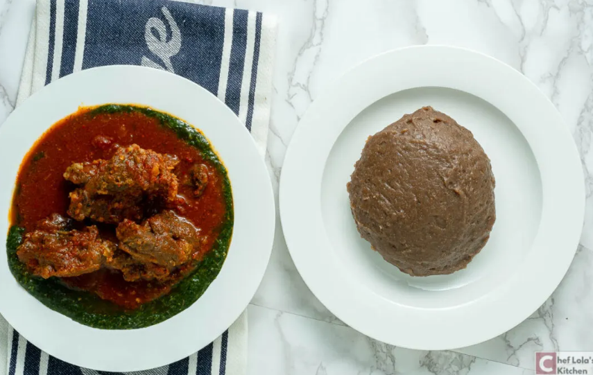

Home
Amala Recipe

Amala Dish
Amala is a traditional Nigerian cuisine that is popular in the southwestern part of Nigeria, particularly among the Yoruba tribe.
Ingredients
-
2 cups Yam Flour
-
2 cups Yam Flour
-
¼-½ cup extra water or add as needed
Steps
-
Bring the 4 cups of water to a rolling boil.
-
Turn down the heat to medium and stir in the yam flour as quickly as possible to prevent lumps until it becomes doughy.
-
Scrape down the sides of the pot, and add a splash of water. Then cover and let it cook for about 4-5 minutes on low to medium heat.
-
Stir again and add more water as needed until the amala becomes sticky, light, and elastic.
-
Serve with your choice of soup or stew.